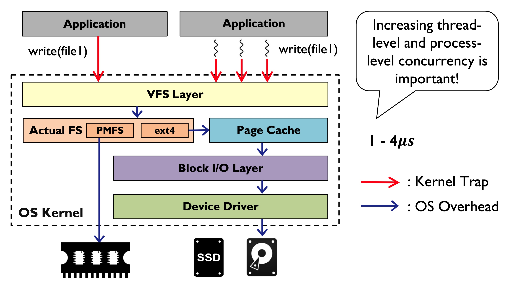

Recently I have been working very tightly with computational storage. It has been a topic for a decade since Willow in OSDI’14. However, until recently the industry decided to manufacture products. Now we see “Smart SSDs” packed with FPGA, CPU, or even GPUs. This paper is a little coincidence. I didn’t expect it to be anything related but it came to be a surprise that it is slightly related. This also leads me thinking about the literature searching. Usually you don’t get papers like this if you search “computational storage” as it’s not mentioned in either the title or abstract. How do we improve this process? Going back to the paper, CrossFS is able to unify user-space, kernel-space, and firmware FS and utilize all the advantages provided.
Motivation
- File systems has high kernel call system overhead. Host would do all work, which places a burden on host CPU and not leveraging device compute power. Inode-based locks are not scalable.
- Device now is entering nano-second era, so the CPU latency (call stack, system call, locks) becomes very obivous.
- Workload I/O pattern: small random I/Os sharing same file.
- Three types of FS: Kernel, User, and Firmware
- Lock limitaiton: Same file as the same inode, and even if two threads are accessing different offsets, they need to grab the same lock.
Design
- CrossFS has all three components: kernel, user, and firmware.
- User FS will translate I/O requests to I/O queue.
- Firmware FS will fetch requests from I/O queue and perform I/O.
- Kernel FS is minimized and only called when needed (mount, setup DMA region, etc).
- Fine-grained lock mechanism. Use
fdinstead of inode for locking. Differentfds will go to different queue (FD-Queue).- Using a tree data structure to resolve overlapping. Each inode will have a tree. Each node in the tree has a
[lower, upper]range of the offset. If two writes ends up in the same offset range, they will go into the sameFD-Queueand in the end, only one request is served. - My question here is each inode one tree, and one should lock the tree to do any tree updates. Then CrossFS wouldn’t perform if there are a lot of overlapping requests, although the paper claims that the lock is short compared to locking until I/O finishes. Also the tree only tracks the offset. What about the length? How to handle partial overlapping with different offsets?
- Using a tree data structure to resolve overlapping. Each inode will have a tree. Each node in the tree has a
- Firmware I/O scheduler. You can imaging with this new
FD-Queueconcurrency model, there will be a lot of queues there. Scheduling becomes important.- Round-robin policy: can delay blocking requests.
- Urgent-aware scheduling: prioritize blocking requests, reduce starvation.
- Crash consistency design
Evalution
They don’t have any real computational storage so they can only reduce host CPU frequency to mimic a low-compute firmware.
- CrossFS scales with # of threads compare to others mentioned in the figures above (3x).
- Locking deisgn seems contributing the most to the performance gain.
- RocksDB test show 2x performance gain with more threads.
Comment
The paper is slightly related to computational storage but with the focus on fine-grained locking mechanism. I like the paper the same reason I like the other good papers. If finds a very small but good angle to cut in with a big topic. The original idea is just use all components avaialble and unify all the FS solutions out there (user, kernel, firmware), but they found that not so much performance boost as they expected, then maybe they did some digging and found out the problem is inode locking. Then it spent a lot of time on the locking mechanism design and their experiments are also around it. However, they don’t want to abandon the orignal idea of crossFS, so here it is. Actually I wonder if you don’t use crossFS and just implement the locking design to any FS, how will it perform? The paper does have the breakdown, and maybe the performance gain is not huge enough for the authors to give up the crossFS idea. Obviously, crossFS could further make the improvement larger with all the kernel-bypassing and device-offloading. The thinking left with me is how do I found such a small angle/problem to cut in?